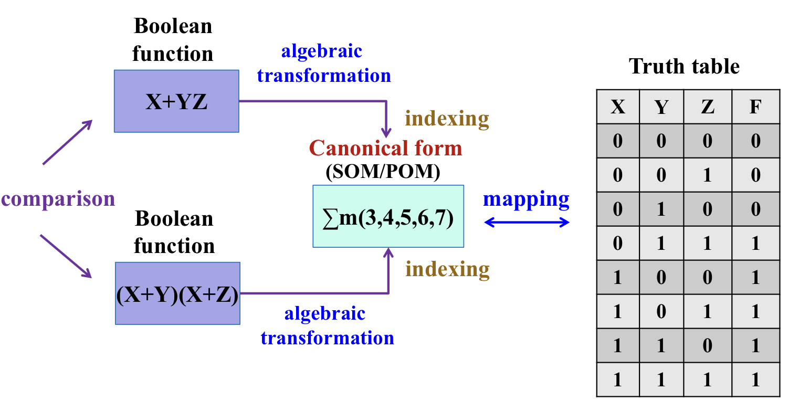
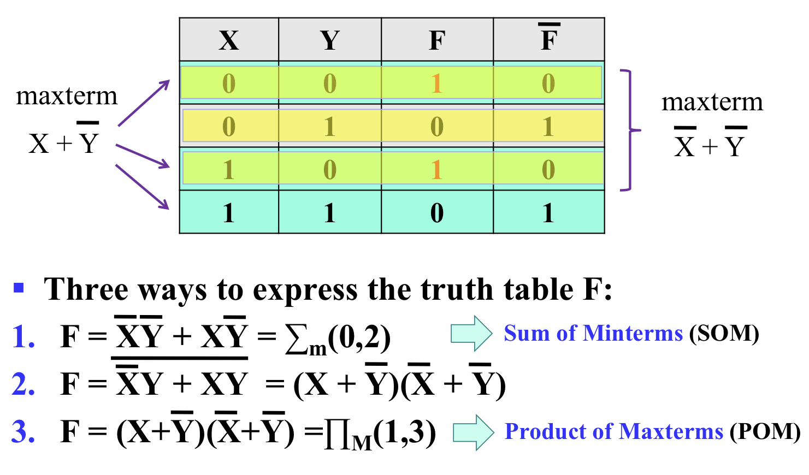
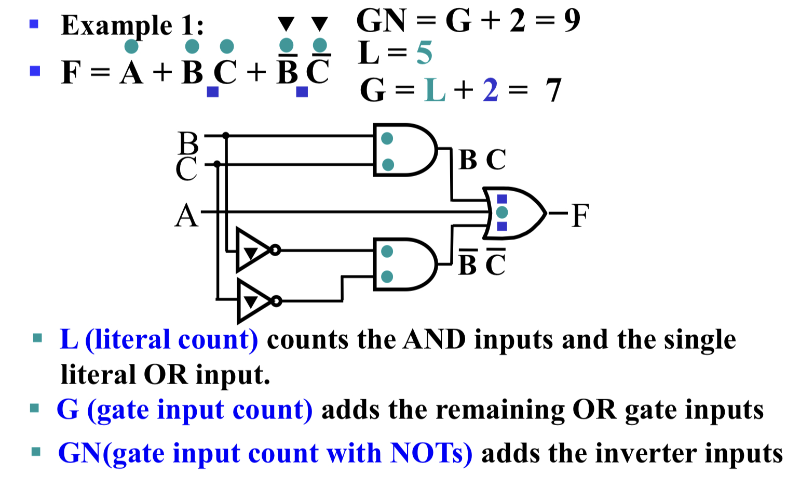
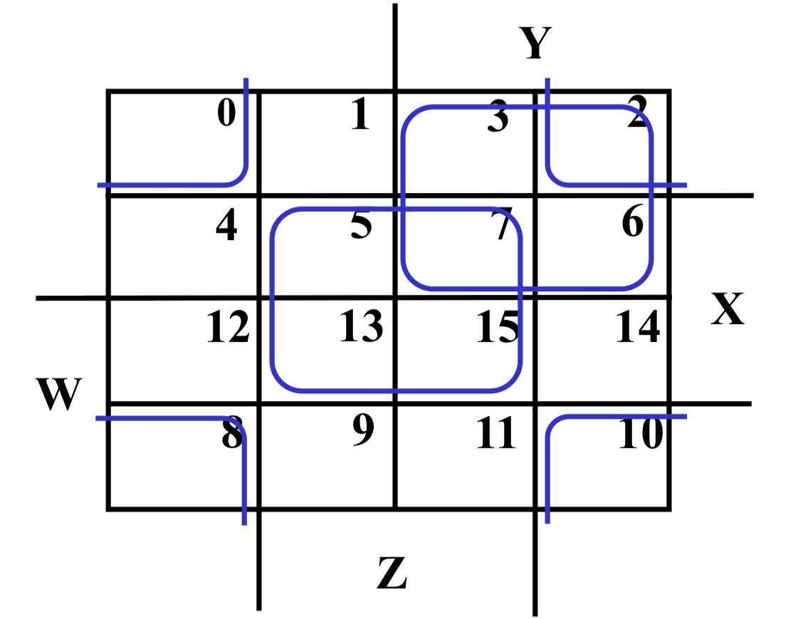
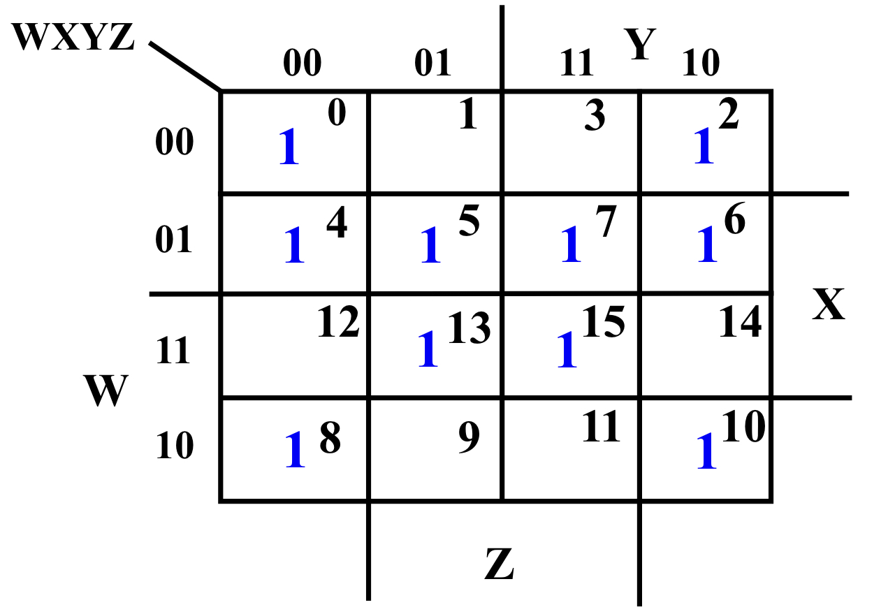
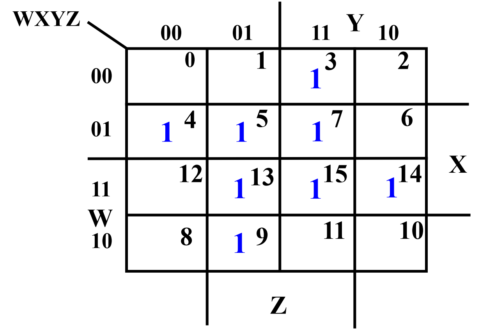
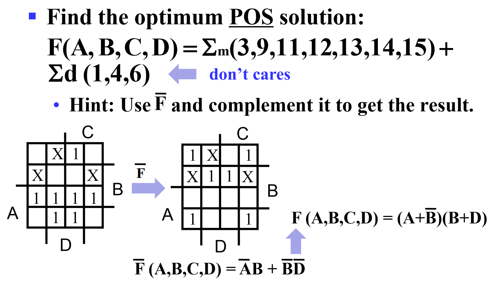

LCDF¶
Week 2: Canonical Forms and Circuit Optimization¶
Part 1¶
Canonical Forms¶
Difficulties in Manipulating Boolean Functions¶
-
For Boolean function have function proof
-
Problem: a Boolean function has multiple expressions.
-
For expression simplification
-
Problem 1: too many identities and theorems of Boolean algebra to apply
-
Problem 2: requires skills for simplification (e.g., \(BC=(A+\overline{A})\cdot{BC}\))
-
Solutions \(\bar{B}\bar{D}+CD+AD+A\overline{B}+\overline{B}C \xrightarrow{\substack{Algebraic \\ Transformation}} \Sigma_m(0,2,3,7,8,9,10,11,13,15)\)
$ \xrightarrow{\substack{Minimization \ Theorem}} \bar{B}\bar{D}+(A+C)D$
Canonical Forms for Comparison of Equality¶

Boolean Expressions for a Truth Table¶

Minterms¶
-
Minterms are AND terms with every variable present in either true (e.g., \(x\)) or complemented form (e.g., \(\overline{x}\))
-
For n-input variables, there are \(2^n\) minterms or \(2^n\) total number of possible input combinations.
-
Each minterm equals 1 at exactly one particular input combination and is equal to 0 at all other combinations.
-
In general, minterms are designated \(m_i\), where \(i\) corresponds the input binary combination at which this midterm is equal to 1.
Maxterms¶
-
Maxterms are OR terms with every variable present in either true (e.g., \(x\)) or complemented form (e.g., \(\overline{x}\))
-
For n-input variables, there are \(2^n\) minterms or \(2^n\) total number of possible input combinations.
-
Each maxterm equals 0 at exactly one particular input combination and is equal to 1 at all other combinations.
-
In general, minterms are designated \(m_i\), where \(i\) corresponds the input binary combination at which this midterm is equal to 1.
Two Principles of Minterms and Maxterms¶
-
All variables will be present in a minterm or maxterm and will be listed in the same order (usually alphabetically)
-
Whether minterm or maxterm must contain all variables.
Practice1: Write down Canonical Forms for¶
\(F(A,B,C)=\bar{x}\bar{y}z+x\bar{y}\bar{z}+xyz\)¶
Practice2: Find \(F(A,B,C,D,E)=m_{2}+m_{9}+m_{17}+m_{23}\)¶
Q: How to implement \(F(A,B,C)=A+\overline{B}C\) as a sum of minterms and a product of maxterms?¶
Transformation to Canonical Sum of Minterms¶
- Any Boolean Function can be expressed as a Sum of Minterms (SOM).
- For the function table, the minterms used are the forms corresponding to the 1's
-
For expressions, expand all terms first to explicitly list all minterms. Do this by "ANDing" any term missing a variable v with a term \((v+\overline{v})\)
-
Example: Implement \(f=x+\bar{x}\bar{y}\) as a sum of minterms.
- First expand terms: \(f=x(y+\overline{y})+\bar{x}\bar{y}\)
- Then distribute terms: \(f=xy+x\overline{y}+\bar{x}\bar{y}\)
- Express as sum of minterms: \(f=m_0+m_2+m_3\)
Transformation to Canonical Product of Maxterms¶
-
Any Boolean Function can be expressed as a Product of Maxterms (POM).
-
For the function table, the maxterms used are the terms corresponding to the 0's
-
For an expression, expand all terms first to explicitly list all maxterms. Do this by first applying the second distributive law, "ORing" terms missing variable v with a term equal to \(v\cdot\overline{v}\) and then applying the distributive law again.
-
Example: Convert to product of maxterms: \(f(x,y,z)=x+\bar{x}\bar{y}\)
-
Apply the distributive law:
\(x+\bar{x}\bar{y}=(x+\bar{x})(x+\bar{y})=1\cdot(x+\bar{y})=x+\bar{y}\)
-
Add missing variable z:
\(x+\overline{y}+z\cdot{\overline{z}}=(x+\overline{y}+z)(x+\overline{y}+\overline{z})\)
-
Express as sum of minterms: \(f=M_2\cdot{M_3}\)
Conversion Between Forms¶
- To convert between sum-of-minterms and product-of-maxterms form (or vice-versa) we follow these steps:
- Find the function complement by swapping terms in the list with terms not in the list
-
Change from product to sums, or vice versa.
-
Example: Given F as before: \(F(x,y,z)=\Sigma_m(1,3,5,7)\)
- Form the Complement: \(\overline{F}(x,y,z)=\Sigma_m(0,2,4,6)\)
- Then use the other form with the same indices - this forms the complement again, giving the other form of the origin function: \(F(x,y,z)=\Pi_M(0,2,4,6)\)
Minterms to Maxterms Conversion¶

- Example: Implement F1 as POM:
\(\overline{F_1}=m_0+m_2+m_3+m_5+m_6\)
\(F_1=\overline{m_0}\cdot\overline{m_2}\cdot\overline{m_3}\cdot\overline{m_5}\cdot\overline{m_6}=M_0\cdot{M_2}\cdot{M_3}\cdot{M_5}\cdot{M_6}\)
Part 2¶
Circuit Optimization¶
Circuit Optimization¶
- Goal: To obtain the simplest implementation for a given function
- Optimization is a more formal approach to simplification that is preformed using a specific procedure or algorithm
- Optimization requires a cost criterion to measure the simplicity of a circuit
- Distinct cost criteria we will use:
- Literal cost (L)
- Gate input cost (G)
- Gate input cost with NOTs (GN)
Input Cost¶

Karnaugh Maps (K-map)¶
- A K-map is a collection of squares
- Each square represents a minterm or maxterm
- The Boolean results are transferred from a truth table onto a two-dimensional grid
- Adjacent squares differ in the value of one variable (each square is ordered in Gray Code)
- Alternative algebraic expressions for the same function are derived by recognizing patterns of squares
- The K-map can be viewed as
- A reorganized version of the truth table
- A clever way to rewrite truth tables to make it easier to figure out the logic
- A topologically-warped Venn diagram as used to visualize sets in algebra of sets
Steps to Minimize Expressions using K-map¶
- Step 1: Identify minterms or maxterms
- Step 2: Fill the K-map with minterms or maxterms
- For SOM, put 1's in squares respective to the minterms
- For POM, put 0's in squares respective to the maxterms
- Step 3: Form the rectangular groups containing maximum number of terms in power of two
- Step 4: Obtain the simplified expression for groups
- For SOM, find the product terms and sum them up
- For POM, find the sum terms and take product of them
Four Variable Maps¶

Example 1: Four Variable Map Simplification¶
\(F(W,X,Y,Z)=\Sigma_{m}(0,2,4,5,6,7,8,10,13,15)\)¶

Example 2: Four Variable Map Simplification¶
\(F(W,X,Y,Z)=\Sigma_m(3,4,5,7,9,13,14,15)\)¶

Don't Cares in K-Maps¶
- Sometimes a function table or map contains entries for which it is known:
- The input values for the minterm will never occur, or
-
The output value for minterm is not used
-
In these cases, the output value need not be defined.
- The output value is defined as a "don't care" that may on either a 0 or 1 value in resulting solutions
- By placing "don't cares" (an "x" entry) in the function or map, the cost of the logic circuit may be lowered.
- Example: A logic function having the binary codes for the BCD digits as its inputs. Only the codes for 0 through 9 are used. The six codes, 1010 through 1111 will never occur, so the output values for these codes are "don't cares".
Product of Sums Example¶

Systematic Simplification¶
- Implicant is a minterm/product term in SOP or maxterm/sumterm in POS of a Boolean function. For example:
\(F=AB+ABC+BC\). Implicants are AB, ABC and BC.
-
The group of "1's" is called implicant. There are two types of implicants: Prime Implicant and Essential Prime Implicant.
-
A Prime Implicant is a product term obtained by combining the maximum possible number of adjacent squares in the map into a rectangle with the number of squares a power of 2.
- An Essential Prime Implicant is a prime implicant that covers one or more minterms that no combination of other prime implicants are able to include.
Practice1: Find all prime implicants for:¶
\(F(A,B,C,D)=\Sigma_m(0,2,3,8,9,10,11,12,13,14,15)\)¶
Practice2: Find all prime implicants for:¶
\(G(A,B,C,D)=\Sigma_m(0,2,3,4,7,12,13,14,15)\)¶
Quine-McCluskey Algorithm¶
- Find all prime implicants
- Include all essential prime implicants in the solution
- Select a minimum cost set of non-essential prime implicants to cover all minterms not yet covered:
- Obtaining a good simplified solution: Use the Selection Rule
Prime Implicant Selection Rule¶
- Minimize the overlap among prime implicants as much as possible.
- In particular, in the final solution, make sure that each prime implicant selected includes at least one midterm not included in any other prime implicant selected.